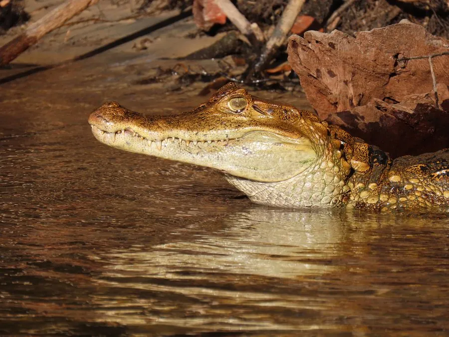

爬行动物 · 动物界
凯门鳄 Caiman crocodilus

中南美洲常见的小型鳄类，两眼之间有横脊形似眼镜，适应力强，是亚马逊流域数量最多的鳄类之一。
- 分类
- 门脊索动物门纲爬行纲目鳄目科短吻鳄科属凯门鳄属
- 栖息环境
- 中南美洲的河流、湖泊、沼泽、湿地与红树林
- 地理分布
- 墨西哥南部至南美洲北部的热带与亚热带水域
- 保护级别
- IUCN 无危（LC）；CITES 附录 II；非中国原产
物种志
凯门鳄体长 1.5–2.5 米，雄性大于雌性，吻部较窄，两眼之间有一条横脊，看起来像戴了一副眼镜，“眼镜凯门鳄”之名由此而来；体色以橄榄绿或黄褐为底，幼体身上有黑色横纹，成体颜色变深，腹部淡黄。
它分布于墨西哥南部至南美洲北部的河流、湖泊、沼泽和湿地，是亚马逊流域数量最多的鳄类之一，食性很杂，捕食鱼类、蛙类、蟹、龟、鸟类和小型哺乳动物，多在夜间活动。每年雨季前后繁殖，雌鳄用植物堆筑巢丘，产卵 15–40 枚，孵化期 70–90 天，母鳄会守护巢穴。它的皮革曾被大量贸易，导致部分种群下降，但适应力强，目前整体被列为无危物种；在中国它属于非原产的外来物种。
形态与习性
- 食性鱼类、蛙类、蟹、龟、鸟类和小型哺乳动物
- 体长1.5–2.5 m
- 寿命约 30–50 年
- 繁殖卵生，15–40 枚，孵化 70–90 天
- 活动节律夜行性
趣味知识
- 凯门鳄两眼之间的横脊像一副眼镜，因此又叫“眼镜凯门鳄”。
- 它是亚马逊流域数量最多的鳄类之一，适应力很强。
- 凯门鳄的皮革曾引发大量捕杀，如今贸易受到国际公约监管。